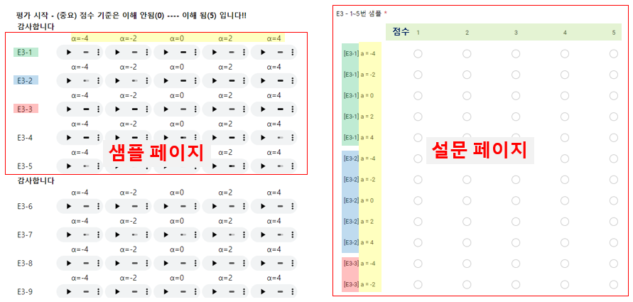

ICASSP2021 청취 평가 - "Formant-Conserved Pitch Shift를 이용한 Data Augmentation 및 FastPitch 모델 개선"
청취 평가 안내도

본 평가에서는 FastPitch(Text-to-Speech 모델) 모델을 기존 방식과 제안한 방식으로 학습한 모델의 합성음을 평가합니다.
그리고 원시 DB와 Augmented DB 의 음질도 평가합니다.
노란색 음영은 반음(Semitone)단위의 α 값으로, 해당 값 만큼 Pitch shift를 합니다.
Pitch Shift 값의 범위는 (-4, -2, 0, +2, +4)로, 샘플 페이지는 가로로, 설문지는 세로로 표현되어 있습니다.
샘플페이지의 순서와 설문지의 순서를 헷갈리지 않게 주의 부탁드립니다.
평가 3 : FastPitch 모델 발화 음질 (Speech Quality) 평가
샘플을 듣고 해당 샘플의 왜곡 정도 및 품질을 평가 하시면 됩니다.
발화 음질 점수에 대한 예시 입니다.
점수
샘플
특징
Sample1
0~1점
소리에 잡음이나 왜곡이 심하여 듣기가 매우 힘듦.
Sample2
2~3점
잡음이나 왜곡이 있음.
Sample3
4~5점
소리가 매우 명료하고, 잡음, 왜곡이 없음.
FastPitch 모델의 합성음 또는 DB/Augmented-DB의 음성으로 같은 샘플이라도 α 에 따라 합성음의 품질이 서로 다릅니다.
힘드시더라도 반드시! 모든 샘플 청취 부탁드립니다!! 평가 시작 - (중요) 점수 기준은 이해 안됨(0) ---- 이해 됨(5) 입니다!!